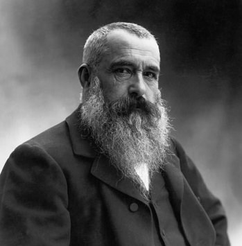

Born on November 14, 1840 in Paris France is where it all begins. By the name of Oscar Claude Monet he started off art at
quite a young age, at 11 in fact by famous Neo-Classical artist Jacques-Louis David. Oscar Claude Monet moved at the age of
five to Le Havre, a seaside town in northern France. His mother died when he was the age of 15, he often went to the coastline in Northern France to walk along the cliffs and beaches. In 1859 Monet applied for a scholarship for painting at a college of arts. Unfortunately he got rejected and moved to Paris. When moving to Paris he had the choice of becoming a salon painter but instead went to the path of enrolling at the Ecole des Beaux-Arts. (An art school) From going to Ecole des Beaux-Arts he met his future wife, Camille Doncieux.
 Monet was forced to serve in Algiers with the military in 1861, when he came back from service his personal outlook was affected by the north African environment. After coming back from the military in 1865, he went straight back to Paris. Coming back into Paris the Paris salon accepted two of his pieces to go on for exhibition. After realizing he would be working in a studio for awhile he decided to work on his paintings in the outskirts of Paris in the Fontainebleau forest. The reason of this choice was to get back to being one with the nature, since that was basically his calming place. In 1870 Monet took refuge in London along with his wife Camille and their baby boy Jean. They went to London to escape the Franco-Prussian War. From his time in London he produced many pieces like Westminster Bridge (1871). All three of the family returned back to France after the war, they all lived in the suburbs called Argenteuil. All three then moved into a town called Vetheuil with a married couple by the names Alice and Ernest Hoschede. After a few years Camille gave birth to their second son, Michel in 1878. She had sadly passed a year and a half later after giving birth of pelvic cancer. After Camilles death there was a shift in Monets work. His paintings captured the personality of each works and the grief of his wifes death. In 1883 Monet moved to Giverny with his new wife Alice. (Her husband Ernest had passed away) They two and their eight children combined moved into that sleepy town and Alice then became Monets second wife. Monet traveled in the 1880s and 1890s to places like London, Venice, Norway, and around France. In 1908 he settled down into his peaceful home in Giverny where he spent
Monet was forced to serve in Algiers with the military in 1861, when he came back from service his personal outlook was affected by the north African environment. After coming back from the military in 1865, he went straight back to Paris. Coming back into Paris the Paris salon accepted two of his pieces to go on for exhibition. After realizing he would be working in a studio for awhile he decided to work on his paintings in the outskirts of Paris in the Fontainebleau forest. The reason of this choice was to get back to being one with the nature, since that was basically his calming place. In 1870 Monet took refuge in London along with his wife Camille and their baby boy Jean. They went to London to escape the Franco-Prussian War. From his time in London he produced many pieces like Westminster Bridge (1871). All three of the family returned back to France after the war, they all lived in the suburbs called Argenteuil. All three then moved into a town called Vetheuil with a married couple by the names Alice and Ernest Hoschede. After a few years Camille gave birth to their second son, Michel in 1878. She had sadly passed a year and a half later after giving birth of pelvic cancer. After Camilles death there was a shift in Monets work. His paintings captured the personality of each works and the grief of his wifes death. In 1883 Monet moved to Giverny with his new wife Alice. (Her husband Ernest had passed away) They two and their eight children combined moved into that sleepy town and Alice then became Monets second wife. Monet traveled in the 1880s and 1890s to places like London, Venice, Norway, and around France. In 1908 he settled down into his peaceful home in Giverny where he spent
 the rest of his days painting nature. He worked on the water lily pieces until he passed of lung cancer. After Monets death he was labeled "the Sistine Chapel of Impressionism."
the rest of his days painting nature. He worked on the water lily pieces until he passed of lung cancer. After Monets death he was labeled "the Sistine Chapel of Impressionism."